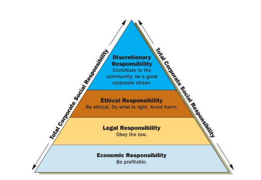
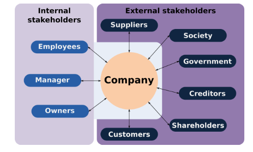
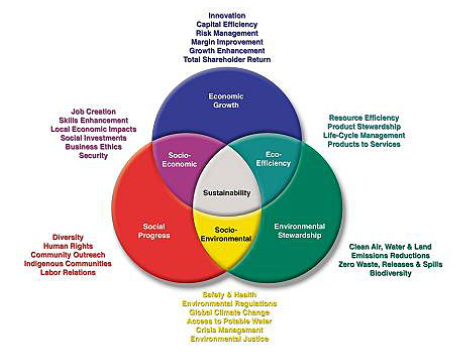

Theories and impacts of Corporate Social Responsibility
Carroll’s corporate social responsibility
In order to understand the corporate social responsibility of the companies, the model proposed by Carroll is effective which further helps to discuss the responsibility of the corporate firms in doing their business ethically. As per the model, the first level is economic where the responsibility of the business is to be profitable so that it is possible to satisfy the stakeholders related to the business. It is the responsibility of the firms to fulfil the needs and preferences of the stakeholders and in this regard the companies need to be profitable so that it can meet the requirements of the stakeholders. It is to perform in a consistent manner for maximising the earning per share which is important to satisfy the shareholders and investors. The business houses need to be committed to maximise the economic benefits of the firms so that it is easy for the business to be consistently profitable. This further influences the corporate firms to enhance the operational efficiency in order to maximise the profitability volume of the companies. It is also the only way to sustain in the business and manage social responsibilities as well in long run. The second stage is legal where the firms need to obey the rules and business ethics for being consistent with the expectations of the government and the law. It is also important to comply with the national and international laws and regulations to run the operational activities across the international borders. For being law abiding citizens, it is also necessary to manage its corporate social responsibility and obey the business ethics successfully. It is also the responsibility of the corporate firms to maintain the quality of the products and services that they try to deliver to the society. Without maintaining the quality of the organisational products and services by ensuring fulfilment of legal requirements, the corporate firm scan not meet the legal components of doing business ethically.
In order to maintain business ethics, the companies also need to be aware regarding employment benefits, competition and health and safety so that they can expand their business sustainably. Employees benefit, safety and security are necessary in the business where the managers and owners need to care the employees and give them safe workplace so that they can work with freedom and proper security. The third stage is being ethical through doing the right things by avoiding harms. In this regard, the companies are concerned in recognising and respecting the norms and practices as well as moral adopted by the society. In order to meet the corporate goals of the firms, it is also necessary to maintain business ethical conduct and maximise the values for corporate citizens. Hereby, corporate integrity and ethical behaviour provide an opportunity to the firms to be ethical and maximise values for overall society as a whole. Be philanthropic is the fifth stage under the Carroll’s theory of corporate social responsibility. The corporate firms try to be a good corporate citizen by contributing resources of the communities and improving the quality of the life of the society as a whole. The firms also need to run their business consistently with philanthropic and charitable expectations of the society. The managers and employees are also participating in charitable activities within the local communities. It is also important to assist voluntarily to the projects which further enhance the quality of lives of the individual living in the society. Through the above mentioned strategic planning the corporate firms can run their business ethically and maximise the values for overall social communities.
Freeman stakeholder theory
The stakeholder theory is also effective to develop the concept of corporate social responsibility and it further provides a scope to identify the strategic planning of managing the stakeholders in long run is that the firms can run their business sustainably. According to the theory of stakeholder management proposed by Freeman, there are internal and external stakeholders who are directly or indirectly engaged with the business activities. In this regard the external stakeholders are such as, suppliers, society, government, creditors, shareholders band customers. On the other hand, the internal stakeholders are employees, managers and owners. It is the responsibility of the organisations to manage the stakeholders buy fulfilling their actual requirements and preferences. Hereby, the CEO if the company and owners need to acknowledge eth needs of the stakeholders so that it is possible to manage them by maximising their values as per their requirements.
In order to manage the employees, the organisations need to fulfil the needs and preferences of the employees and create values for them. In this regard the companies need to provide safe and secure workplace to the staff members so that they can work freely and fulfil their job responsibilities successfully. Additionally, it is the responsibility of the corporate firms to meet their expectations through providing effective salary, and implementing the strategy of giving performance related ay, incentives bonus which will be effective to maximise the values for the employees. Moreover, giving the staff member freedom to work, flexibility in choosing working time and encouraging their creativity in the workplace are effective strategic planning to moti8vate the members and retain them for long run. On the other hand, it is necessary to manage the owners and managers by giving them proper incentive and other benefits in the organisation which encourage them to conduct their job responsibilities proficiently.
In order to meet the requirements of the external stakeholders, the companies also try to create values for them. For example, meeting the needs and preferences of the customers is the responsibility of the firms and in this regard the companies aim at delivering high quality products and services to the consumers according to their requirements. Moreover, setting affordable price for the products and services is also effective to create values for the customers. In addition to these, the customer service executives of the companies try to provide high quality service for fulfilling the requirements of the customers which also helps the brand to improve the image and reputation among the customers and it further enhances customer’s retention. In addition to these, it is the responsibility of the companies to maximise values for society as a whole by investing in charitable events which further ensure social development in near future. Moreover, in order to create values for the corporate citizens and social communities as a whole, the companies need to reduce environmental impacts through reducing wastage and emission of green house gases as well as improving the use of renewable resources and recycling the wastage. Through the above mentioned strategic planning, the companies can manage their stakeholders and run the business activities ethically in long run.
Triple bottom line of corporate social responsibility
The triple bottom line of managing corporate social responsibility is effective which provides a scope to the companies to manage the operational activities not only in terms of economic benefit bit also for environmental and social benefits. On this theory of triple bottom line, there are three aspects of balancing the business activities and performance of the brand which are economic benefit, social responsibility and environmental friendly. In order to manage social sustainability of the firms, the companies need to ensure that the activities are useful in developing the society where it can create jobs in the country and improve the living standard of the community as a whole. In addition to these, health and safety of the workplace as well as quality of the products and services provided by the organisation need to be maintained in order to manage social responsibility. On the other hand, fair standard and investment in social activities are also necessary in order to be socially referable cross the globe.
In order to be environmentally sustainable, the companies also need to be concerned regarding minimisation of environmental impacts of the organisational activities. In this regard, the companies need to increase the use of renewable resources so that it is possible to reduce negative environmental impacts. It also must focus on the resources which can be recycled so that the amount of natural resources can be reserved successfully. Reducing green house gas emission as well as managing production of the companies further gives a scope to expand the business activities ethically. Lastly, as per the theory of triple bottom line, the firms need to manage economic sustainability where it is possible to encourage the stakeholders by giving high rate of return on their investment. Managing the triple bottom line is therefore necessity to retain efficient employees who are helpful to ensure future sustainable growth of the business. Managing socio economic factors helps the brands to enhance skills, job creation, social investment, business ethics and security. On the other hand, it is possible to improve eco-efficiency through resource efficiency, product life cycle management and product stewardship.
Managing corporate social responsibility is essential; for all the corporate firms to maintain the responsibility of the corporate firms. Through the strategic planning of the corporate social responsibility, the companies can manage their responsibilities towards the society. The multinational corporate firms can carry their business with moral and by maintaining ethical standard. The corporate firms also can prevent the environmental pollution through managing the responsibility towards its society. The business also can minimise the ecological imbalance which is also required for balancing the whole society sustainably. Overall development of the locality also can be possible through corporate social responsibility. Apart from that the companies can develop effective technology which will provide an innovative tactics of doing the operational activities proficiently. Moreover, through corporate social responsibility, the firms can contribute towards the development of social health and education and in this regard social development can be possible in long run. Hereby, there is a positive impact of managing corporate social responsibility on the business performance and the corporate firms can manage their responsibility towards their society.
The brands also have the responsibility towards the government and managing the corporate social responsibility provides an opportunity to manage the responsibility towards government. The companies can obey the rules and regulations as well as they are concerned in paying regular taxes to make the business ethical. Cooperation with the government further provides a scope to create social values so that it is easy to giver safe and secured environment to the social communities for better living standard. Managing corporate social responsibility also has direct positive impact on the business as it helps to manage the responsibility towards its shareholders. The companies can ensure a reasonable rate of return over time to the shareholders as per the agreement. The corporate firms also can survive in the industry and build their reputation and goodwill in the market. Hereby, corporate social responsibility is beneficial for the multinational corporate firms to run their business ethically and improve brand image in near future.
Transparency and accountability of the business activities can also be maintained through managing corporate social responsibility where it is possible to build trust and loyalty among the stakeholders of the company. Managing corporate social responsibility is also beneficial for the companies in having better brand recognition as well as positive brand reputation. It further helps the companies to improve the customer retention which is necessary in running the business activities strategically. Moreover, managing corporate social responsibility is a cost saving tactics through which the organisations can improve their financial performance. On the other hand, the companies can ensure organisational growth which further helps the brands to expand their busi9ness activities in near future. Easier access to the capital by satisfying all the stakeholders including shareholders and investors also can be possible through managing the strategies of corporate social responsibility. In addition to these, the organisations can satisfy the employees through managing corporate social responsibility and in this regard the companies have greater ability to attract talent and retain more efficient staff members for managing the performance of the corporate firms.
Hereby, there is huge number of advantages for which the organisations try to maintain their corporate social responsibility which further helps to improve the corporate image of the firms in long run. The strategic planning for managing corporate social responsibility also provides an opportunity to the firms to minimise the resource use, waste and emission which further helps to improve environmental impacts of the firms. This is also helpful for managing corporate image of the companies. By implementing the strategic planning of corporate social responsibility is important for the companies as it makes the brand sustainable and responsible towards the society as a whole. It is also sustainable for the business firms to recruit the right employees who are efficient in managing the organisational responsibility successfully and retain for long run through motivation and fulfilling their requirements. Managing corporate social responsibility also has positive impacts on the businesses as it attracts positive media attention as well as identifies new business opportunities in near future. It also helps the corporate firms in accessing finance successfully as well as reducing regulatory burden of the firms which further giver a scope to the businesses to run their operational activities sustainably.